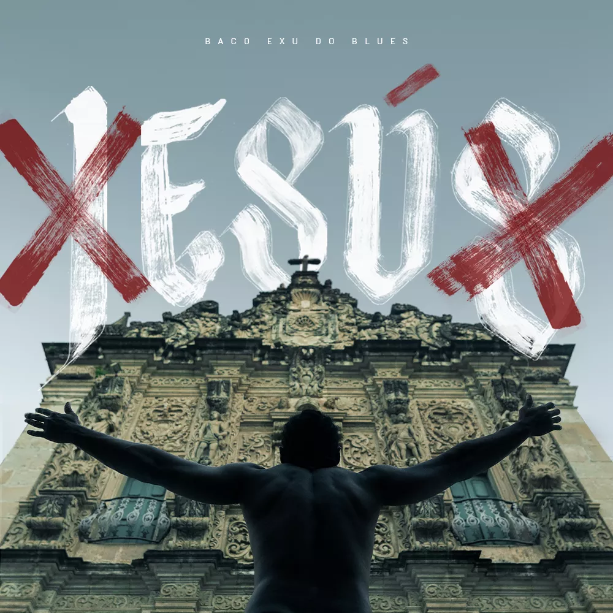
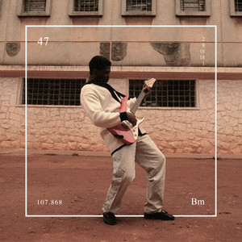
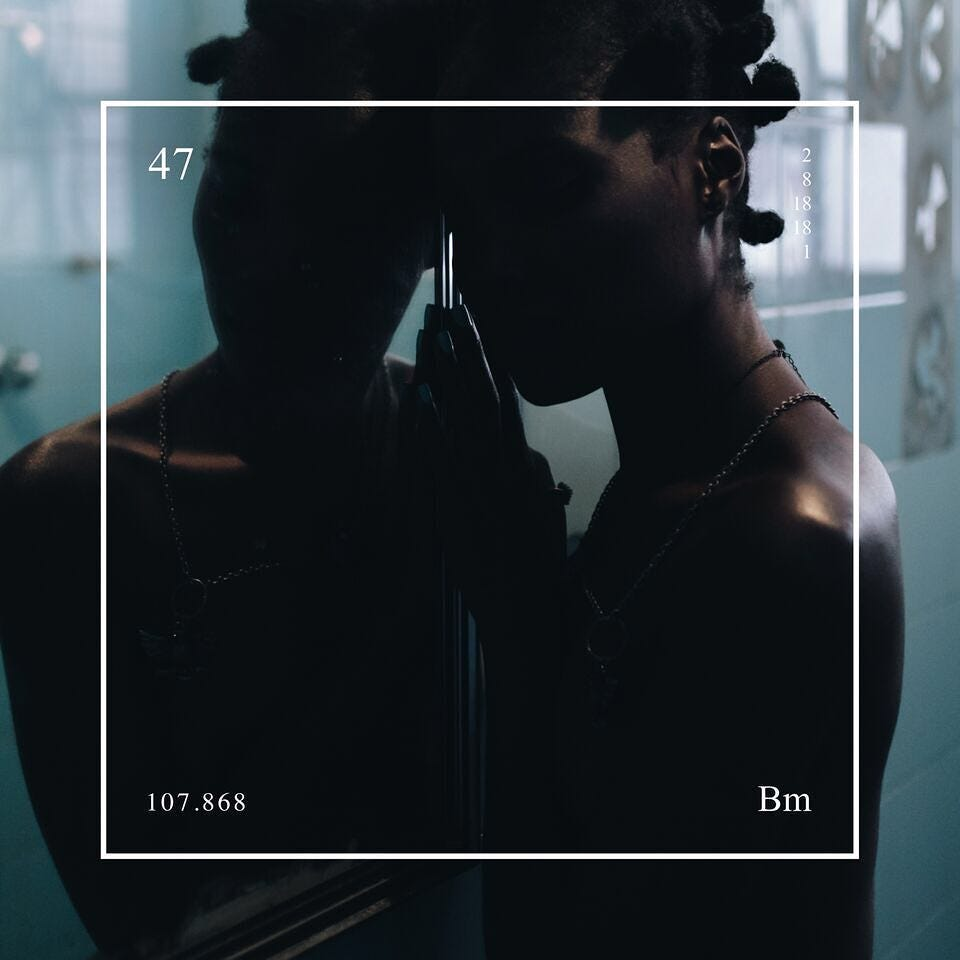
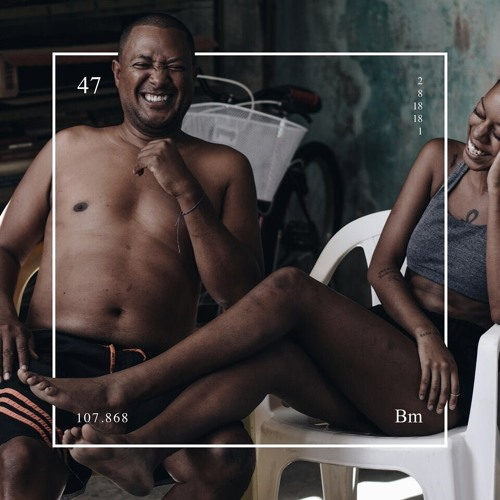
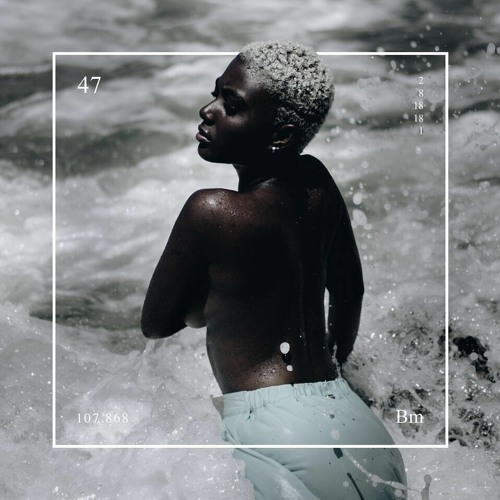
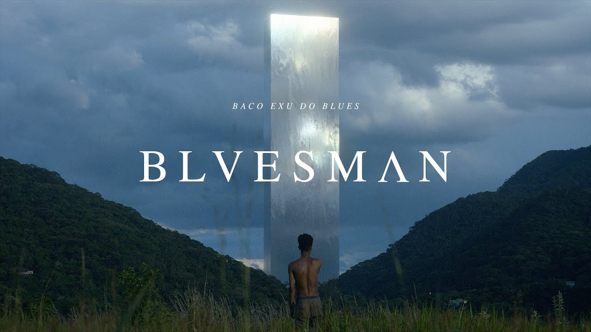
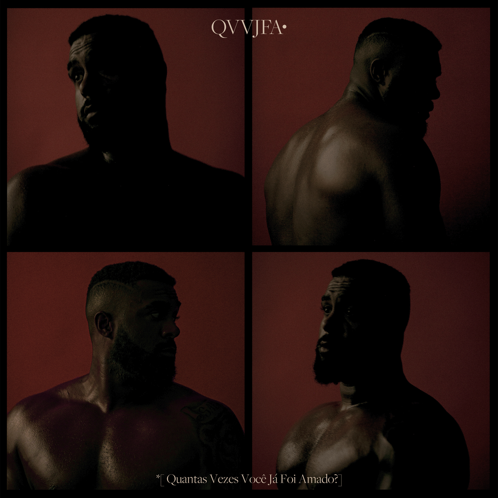

Filho de uma professora de literatura e um professor de tai chi chuan, Diogo Álvaro Ferreira Moncorvo nasceu em Salvador, em 11 de janeiro de 1996, mas ainda na infância se mudou com a família para a pequena Alagoinhas, uma pacata cidade a 124 km da capital baiana.
O contexto de criação do cantor de voz grave e sorriso frouxo é muito importante para compreender quem é Baco Exu do Blues: foi a morte precoce do pai, quando tinha apenas 7 anos de idade, que o levou a um caminho de rebeldia que seria a base de sua música.
Desde cedo a arte surgiu como uma válvula de escape. Apaixonado por literatura, devorou obras de Jorge Amado e Dostoiévski, enquanto lidava com o pesoe a responsabilidade de ser o único aluno negro das escolas particulares onde estudava como bolsista.
E foi justamente por não se encaixar no meio acadêmico que ainda aos 16 anos descobriu sua verdadeira vocação: encantado pela cena do rap brasileiro, Baco abandonou os estudos e passou a se dedicar em tempo integral à música.
Vida pessoal e a negação do romance
O sucesso profissional, no entanto, não encontrou eco em sua vida pessoal. Solteiro, ele desconversa sobre sua sexualidade e diz “não saber” se é hétero, bi ou gay, garantindo que “não tem tempo” para relacionamentos.
Nas redes sociais não faltam interessados em fisgar seu coração: com mais de 2,7 milhão de seguidores, o cantor coleciona elogios, sobretudo após eliminar mais de 46 kg com malhação e dieta.
Mesmo assim, a revelação do rap brasileiro não nega o assombro com o assédio. “Foram 25 anos pra eu me achar lindo”, canta em seu álbum mais recente.
O que significa Baco Exu do Blues?
Se você quer saber quem é Baco Exu do Blues, é provável que esteja se perguntando sobre a origem do nome do cantor.
Para batizar sua carreira, o artista escolheu o nome do deus romano do vinho e dos excessos, Baco, e do orixá Exu, considerado mensageiro e guardião em religiões de matriz africana.
A “cereja no bolo” é o Blues, que o rapper considera ser o “primeiro ritmo a formar pretos ricos”.
• Começou a rimar nas batalhas de rap em Salvador (BA), aos 15 anos de idade.
• Em 2006 lançou o single “Sulicídio”, gravado com o pernambucano Diomedes Chinaski.
• Em 2017 lançou seu primeiro CD “Esú”, com músicas inéditas e autorais, produzido por Nancy Silvvs. O CD foi considerado o melhor disco do ano pelo crítico musical Mauro Ferreira em sua coluna no portal G1.
• Em 2018 apresentou o show de lançamento do CD “Esú” no palco do Circo Voador, no Rio de Janeiro. Nesse mesmo ano lançou o CD inédito e autoral “Bluesman”, ficando responsável também pela produção. O disco contou com a participação do músico paulistano Tim Bernardes cantando e tocando piano na faixa “Queima a minha pele” e na guitarra da faixa “Flamingos”. O CD também teve participação da cantora 1lum3 (Ilume), do trio curitibano Tuyo. A música “Te amo disgraça” entrou para a trilha sonora da série “Ilha de ferro”, da Rede Globo.
• O show de lançamento do CD “Bluesman”, marcado para o início de 2019 no Circo Voador, teve seus ingressos esgotados em menos de 24 horas após ser divulgado, com mais de um mês de antecedência. O CD “Bluesman” foi eleito pela crítica especializada do jornal O Globo um dos dez melhores discos de 2018.
• Em 2019 participou do projeto “Hip Hop Hurricane” realizado no Palco Sunset do festival “Rock in Rio”, no Rio de Janeiro, ao lado da Nova Orquestra, formada por 45 músicos, e dos rappers Agir, Rael e Rincon Sapiência. Nesse mesmo ano o clipe de “Bluesman”, faixa-título do disco lançado em 2018, ganhou o o “Grand Prix” na categoria “Entertainment for Music” do festival francês de publicidade do Cannes Lions.
• Em 2020 apresentou o show “Bluesman” em palco montado na Praia de Ipanema, no Rio de Janeiro, para um público estimado de 40 mil pessoas. Na ocasião, em que comemorava seus 24 anos de idade, convidou o público a cantar o parabéns durante o espetáculo. O show teve participação da cantora Urias, do rapper BK, e de outros artistas. Nesse mesmo ano lançou o CD “Não tem bacanal na quarentena”, gravado durante o período de isolamento social por conta à pandemia do vírus Covid-19, com nove faixas inéditas e autorais, sendo essas “Jovem preto rico”, “Tudo vai dar certo”, com a participação da rapper 1LUM3”, “Ela é gostosa pra caralho”, com a participação da cantora Maya, “Preso em casa cheio de tesão”, com a participação da cantora Lellê, “Humanos não matam deuses”, “O sol mais quente”, com a participação da cantora Aisha, “Dedo no cu e gritaria”, com a participação dos rappers Celo Dut, Vírus e Young Piva, “Tropa do Babu”, “Amo Cardi B e odeio Bozo”. O disco, disponibilizado na internet sem aviso prévio, antecipou-se ao CD “Bacanal”, gravado no Rio de Janeiro, cujo lançamento foi adiado devido à quarentena.
• Em 2021, depois de anos em São Paulo, voltou a morar em Salvador e criou, ao lado do produtor Leonardo Duque, o selo “999” , empresa especializada em gerenciar a carreira de artistas da periferia de Salvador.
• Em 2022 lançou no dia 26 de janeiro o álbum “QVVJFA – Quantas Vezes Você Já Foi Amado?” nas plataformas digitais. Em 24 horas, o álbum já havia sido tocado 24 milhões de vezes se tornando um dos Top 5 globais no Spotfy. O disco teve a produção de Marcelo de Lamare, e contou com as participações de Glória Groove e Muse Maya, e das vozes sampleadas de Gal Costa e Vinicius de Moraes. Gravou em dueto com Luísa Sonza o clipe de “Hotel caro”.
|  | Sua frustração com a escola e os ataques racistas vindos dos colegas seriam o pano de fundo de seu primeiro álbum, Esú, lançado em 2017, de onde saiu a visceral Te Amo Disgraça, primeiro grande sucesso de sua carreira. |
|  | Em seu segundo álbum de estúdio, Bluesman (2018), a raiva juvenil deu lugar à raiva consciente de um homem mais maduro, que aprendeu quais as origens de suas dores, incluindo sua depressão. A fórmula nua e crua deu certo e o álbum foi eleito o melhor do ano pela Rolling Stone Brasil, além de ter sido considerado um dos melhores álbuns do ano pela Associação Paulista de Críticos de Arte. |
   |
Faixas como Me Desculpa Jay Z, Flamingos e Girassóis de Van Gogh colecionaram mais de 280 milhões de streamings e, em 2019, o disco faturou até o prêmio Entertainment for Music no Festival de Publicidade de Cannes. |
|  | O cantor também lançou Bluesman no formato curta-metragem, com direção de Douglas Ratzlaff Bernardt: um quebra-cabeças de letra, melodia e fotografia que “capturou” a alma torturada do músico em meio a temas sensíveis, como raça e sociedade. |
|  | A ascendente de Baco Exu do Blues não parou por aí. Seu terceiro trabalho de estúdio, Quantas Vezes Você Já Foi Amado?, foi lançado em 2022 e ficou entre os cinco álbuns mais ouvidos do mundo no Spotify em sua semana de lançamento. |